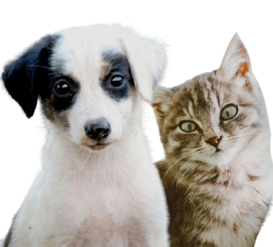
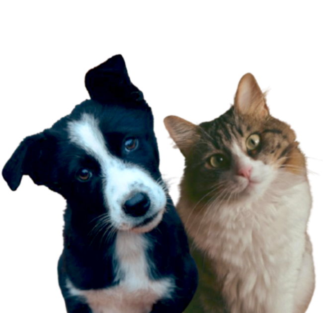
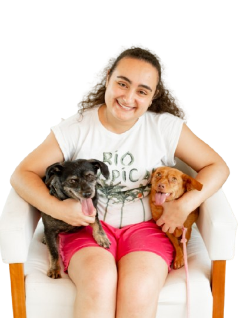
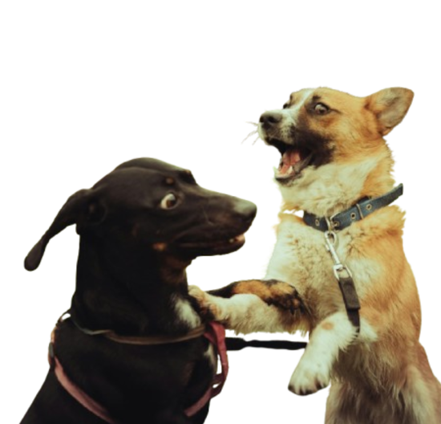
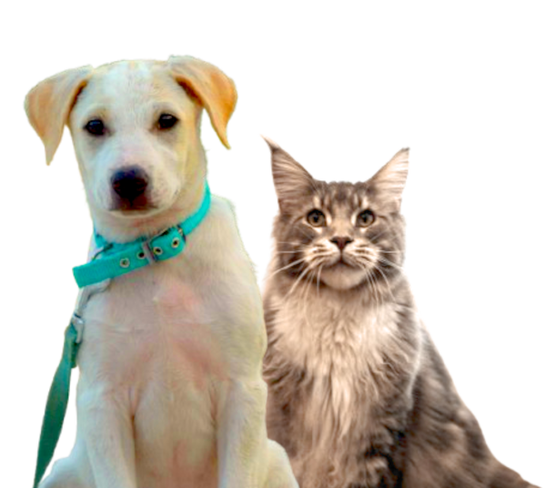
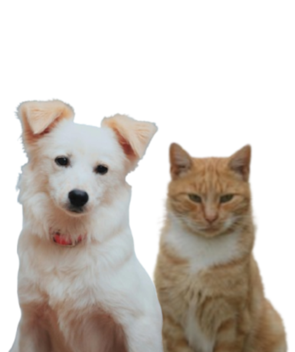

PetSitter
Olaria-RJ
Você, morador do bairro Olaria (Rio de Janeiro), vai viajar e não pode levar seu Pet?
E só me chamar que cuido dele(a) com todo carinho para que, você tutor, possa curtir a viagem sem se preocupar.

O que é PetSitter?
PetSitter é um termo do ingles que significa babá de pet.
É um profissional que vai até a sua casa cuidar de seu pet quando você precisa se ausentar, atendendo todas as necessidades dele como:
- Alimentar;
- Brincar;
- Passear;
- Dar bastante carinho;
- Deixar o seu local limpo e organizado;
Entre outras coisas que forem necessárias para sua saúde e bem-estar.

Sobre mim
Sempre fui uma pessoa extremamente apaixonada pelos os animais, segundo minha mãe, os meus amigos imaginários da infância eram bichinhos.
Já tive diversos pets, porém hoje em dia, eu sou tutora de 5 cachorrinhas lindas, um gato arteiro e uma gata idosinha. Todos adotados ou tirados das ruas.
Nascida em Minas Gerais, me mudei para a cidade maravilhosa em 2026 para ter novas oportunidades de trabalho e desde então tenho me apaixonado cada vez mais pelo Rio de Janeiro.
Sou formada em Medicina Veterinária, pela Universidade Federal de Viçosa - MG (UFV) e possuo anos de experiencia na profissão, apesar de hoje em dia, por escolhas pessoais, não exerce-la.
Trabalho como PetSitter desde 2021, exercendo a profissão com total dedicação e respeito, pelos pets e seus tutores.
Por isso, convido você tutor a conhecer melhor os meus serviços, tenho certeza de que não irei decepcioná-lo.

Serviços
Os meus serviços de PetSitter funcionam assim:
Primeiro, combinamos um dia para que eu possa visitá-lo e conhecer o seu Pet, você irá me explicar toda a rotina e necessidades que ele possue.
Logo após, definimos quantos dias, e quantas vezes ao dia, serão necessários os meus serviços.
Por fim, você deixará a chave de seu lar comigo, e todos os dias irei te mandar mensagens de como o Pet está, como foi a visita, junto de fotos e vídeos para que você possa matar a saudade enquanto estiver longe.
Avaliações
Veja o que dizem as pessoas que já confiam no meu trabalho:

Orçamento
Utilize a calculadora abaixo e faça você mesmo o seu orçamento. Mas antes irei te explicar os valores e como funciona esse cálculo.
Os valor da diária é de R$ 60,00, quando for somente UM Pet na residência. Quando houver mais de UM, será acrescentado o valor de R$ 10,00 na diária por Pet. Exemplo: 1 Pet = R$ 60,00, 2 Pets = R$ 70,00, 3 Pets = R$ 80,00, e por aí vai.
O meu deslocamento até a sua residência é de R$ 10,00 por vez que eu irei ir até lá, ou seja, o valor final do deslocamento vai depender de quantas visitas por dia irei fazer ao seu Pet.
Contate-me

